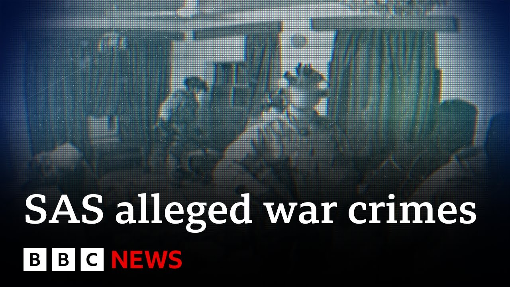

【前英国特种部队成员打破沉默，揭露同僚“战争罪行” | BBC新闻】
Summary: Former UK special forces members reveal colleagues' war crimes, prompting a public inquiry into unlawful killings in Iraq and Afghanistan, with allegations extending beyond the SAS to the SBS.
摘要： 前英国特种部队成员揭露同僚战争罪行，引发对伊拉克和阿富汗非法杀戮的公开调查，指控范围不仅涉及SAS，还包括SBS。

⏱️ Estimated Reading Time: 2 min
Those who served with UK special forces are about to break a code of silence.
曾与英国特种部队共事的人即将打破沉默准则。
They don't want to be identified.
他们不希望暴露身份。
We've used actors to speak their words, but they want the world to know what they saw.
我们请演员代为转述，但他们希望世界知道他们的所见。
Everyone knew what was going on.
所有人都知道发生了什么。
It's not scout camp.
这不是童子军营。
Everyone knew what was happening.
所有人都知道发生了什么。
People were murdered.
有人被谋杀了。
The government has set up a public inquiry, but it's only looking at operations between 2010 and 2013.
政府已启动公开调查，但仅针对2010年至2013年的行动。
We've been told the unlawful killings started much earlier in Iraq.
我们被告知非法杀戮早在伊拉克就已开始。
There was one operation where the bloss had clearly executed a man.
有一次行动中，部队显然处决了一名男子。
It's disgraceful.
这是可耻的。
There's no professionalism in that.
这毫无专业性可言。
The killing was at its worst in Afghanistan.
杀戮在阿富汗最为严重。
British soldiers were being killed in Helmand.
英军士兵在赫尔曼德省遇害。
Special forces were sent in to stop the Taliban fighters and bomb makers.
特种部队被派去阻止塔利班武装分子和炸弹制造者。
The public inquiry has only been looking at allegations about the SAS.
公开调查仅关注涉及SAS的指控。
The eyewitnesses we've spoken to say the Navy Special Forces, the SBS, committed war crimes, too.
我们采访的目击者称，海军特种部队SBS也犯下了战争罪行。
I can't recall us taking a single injured insurgent back to base for treatment.
我不记得我们曾将任何一名受伤的叛乱分子带回基地治疗。
They were shot there and then.
他们当场被枪杀。
Under British and international law, troops can't deliberately kill unarmed civilians or prisoners of war.
根据英国和国际法，军队不得故意杀害手无寸铁的平民或战俘。
But the eyewitnesses say they saw the execution of detainees, including children.
但目击者称他们目睹了对被拘留者（包括儿童）的处决。
They handcuffed a young boy and shot him.
他们给一名小男孩戴上手铐并枪杀了他。
He was clearly a child.
他显然是个孩子。
Not even close to fighting age.
甚至未到参战年龄。
I couldn't believe what they were doing.
我无法相信他们的行为。
These are murderers.
这些人是杀人犯。
They should all be locked up.
他们都该被关起来。
The Ministry of Defense says it supports the independent inquiry and it is not appropriate to comment on allegations which may be within its scope.
国防部表示支持独立调查，但不宜对可能属于调查范围的指控发表评论。
The eyewitnesses say they are proud to have served in the British armed forces, but they can no longer keep quiet about the terrible things they saw.
目击者称他们以曾服役于英国军队为荣，但无法再对所见暴行保持沉默。
Richard Bilton, BBC News.
理查德·比尔顿，BBC新闻。